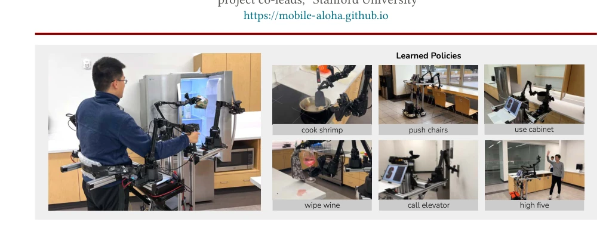
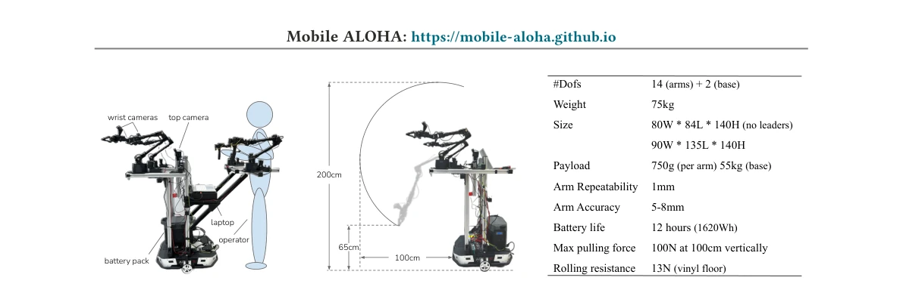
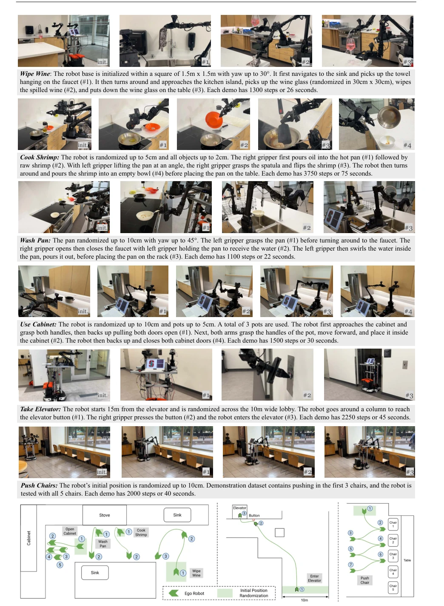
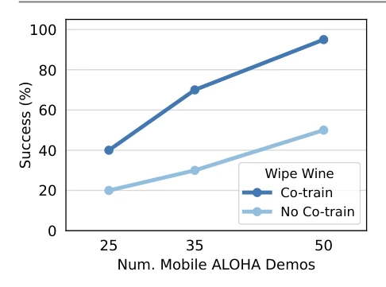
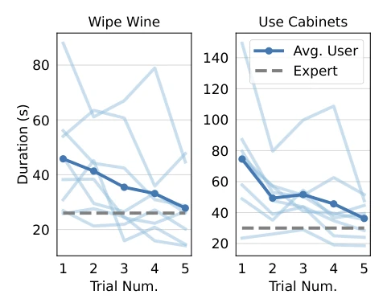
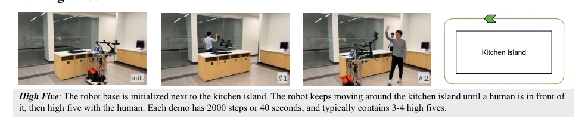
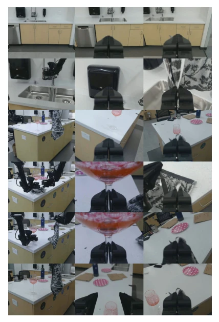

This paper pours cold water on the embodied AI community while also handing them a ladder. Mobile ALOHA's biggest selling point is not how fancy the algorithms are, but rather bringing expensive mobile manipulation robots down to an affordable price point of $32k, allowing ordinary laboratories to afford it. Essentially, it adds wheels to ALOHA, achieving whole-body teleoperation via a "human-pulling-cart" approach. The most brilliant part is the "co-training" strategy, feeding static ALOHA data to the mobile policy, yielding immediate results. But don't get too excited, the hardware is still a bit large; although $32k is cheaper than PR2, it is still far from a "toy"; moreover, currently it can only learn single tasks, still far from a true general-purpose robot. However, for quickly validating mobile manipulation ideas, this is indeed a high cost-performance open-source solution. It proves that low-cost hardware combined with data reuse can also yield good results; although not yet at the level of "general-purpose", it at least makes "mobile manipulation" no longer the patent of wealthy laboratories.
Existing imitation learning mostly focuses on desktop manipulation, lacking mobility and dexterity [104]. Real-world tasks (such as opening cabinets, cooking) require whole-body coordination. Existing hardware such as PR2, TIAGo are too expensive (>$200k) and teleoperation is complex [93]. Low-cost solutions such as Hello Robot Stretch do not support dual-hand or whole-body control [2]. There is a lack of low-cost whole-body teleoperation hardware and efficient data utilization methods. This paper aims to solve the problems of high hardware threshold and low data efficiency, making mobile manipulation affordable and easy to get started. Furthermore, the utilization of static datasets has not been fully explored; this paper fills this gap by improving policy generalization through mixed training.

Figure 1: Mobile ALOHA . We introduce a low-cost mobile manipulation system that is bimanual and supports whole-body teleoperation. The system costs $32k including onboard power and compute. Left: A user teleoperates to obtain food from the fridge. Right: Mobile ALOHA can perform complex long-horizon tasks with imitation learning.
The system consists of Mobile ALOHA hardware and an imitation learning pipeline. In terms of hardware, ALOHA dual arms are installed on an AgileX Tracer base, and the operator is physically connected to the base via a belt, achieving whole-body teleoperation with hands controlling arms and feet controlling the base. The data stream records 14-dimensional joint positions + 2-dimensional base velocity. In the learning phase, Behavior Cloning (BC) is adopted. The core innovation is Co-training: mixing Mobile ALOHA task data with the static ALOHA dataset for training. Static data has no base actions, so base action labels are padded with zeros. Policy input is multi-view RGB and joint positions, output is action sequences. Compatible with methods such as ACT, Diffusion Policy. In this way, the model can leverage operational priors in static data to compensate for the scarcity of mobile data, achieving data-efficient learning.

Figure 2: Hardware Details. Left: Mobile ALOHA has two wrist cameras and one top camera, with onboard power and compute. Middle: The teleoperation setup can be removed and only two ViperX 300 [3] are used during autonomous execution. Both arms can reach a min/max height of 65cm/200cm, and extends 100cm from the base. Right: Technical specifications of Mobile ALOHA .
Tested on 7 real-world tasks (such as cooking, opening elevators). Compare the effects with and without co-training. Results show co-training significantly improves success rates (e.g., Call Elevator from 0% to 95%). Verified compatibility with ACT, Diffusion, VINN. Ablation studies indicate co-training significantly improves data efficiency and is insensitive to data mixing ratios. User studies prove teleoperation is easy to get started. Data efficiency experiments show that 35 demonstrations with co-training can surpass the effect of 50 demonstrations without co-training, proving the value of data reuse. In long-horizon tasks, co-training helps the policy better handle coupling errors between navigation and manipulation.

Figure 3: Task Definitions. We illustrate 6 real-world tasks that Mobile ALOHA can perform autonomously. The 7th task High Five is illustrated in the Appendix A.1 due to space constraint. For each task, we describe randomization and sub-task definitions. We also include an illustration of the base movement for each task (not drawn to scale).

Figure 4: Data efficiency. Co-training with static ALOHA data leads to better data efficiency and consistent improvements over training with Mobile ALOHA data only. Figure style credits to [70].

Figure 5: Teleoperator learning curves. New users can quickly approach expert speed on an unseen tasks teleoperating Mobile ALOHA .
其他图片Other Figures

Figure 6: Task Definition of High Five.

Figure 7: Example Image Observations of Wipe Wine. We show the observations from the top camera, left wrist camera and right wrist camera from left to right columns. These images are arranged sequentially in time from top to bottom.